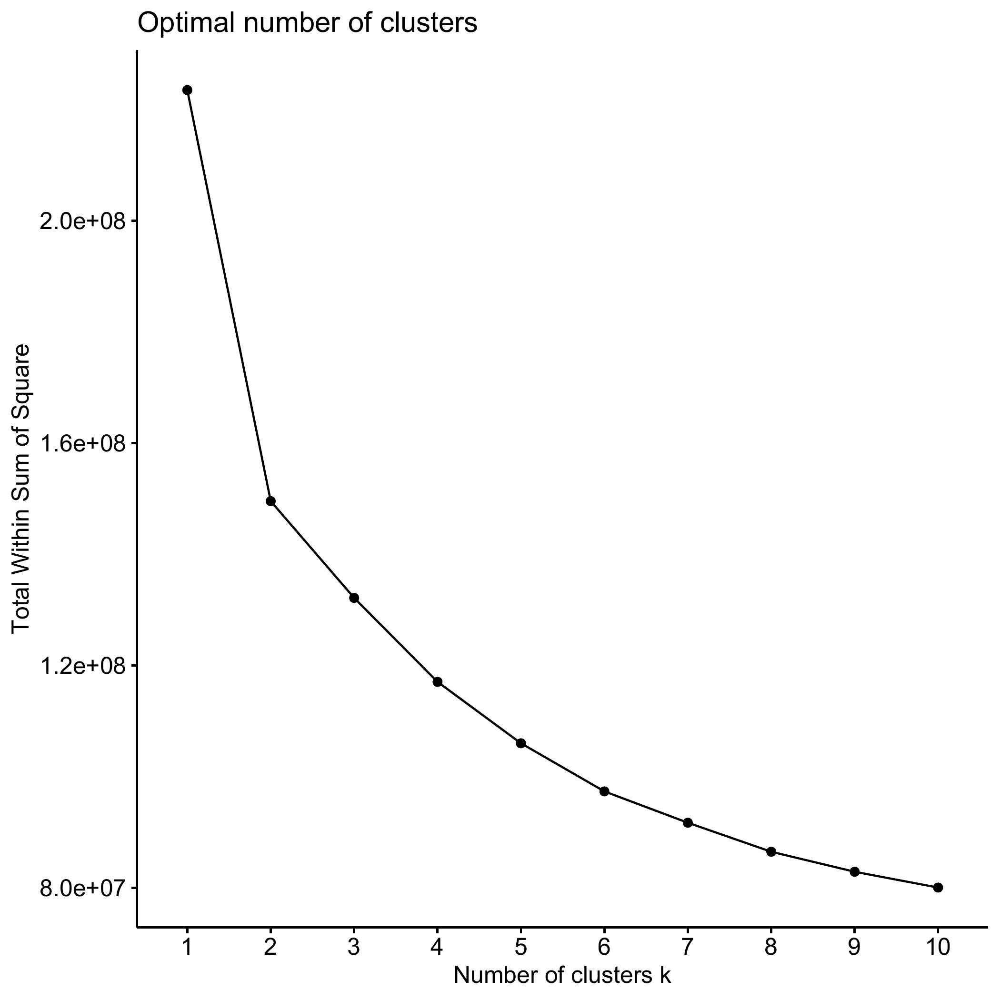
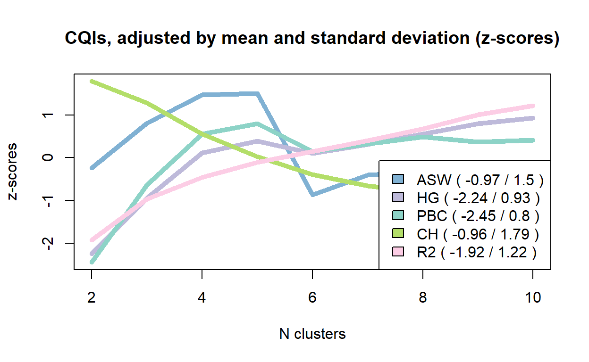
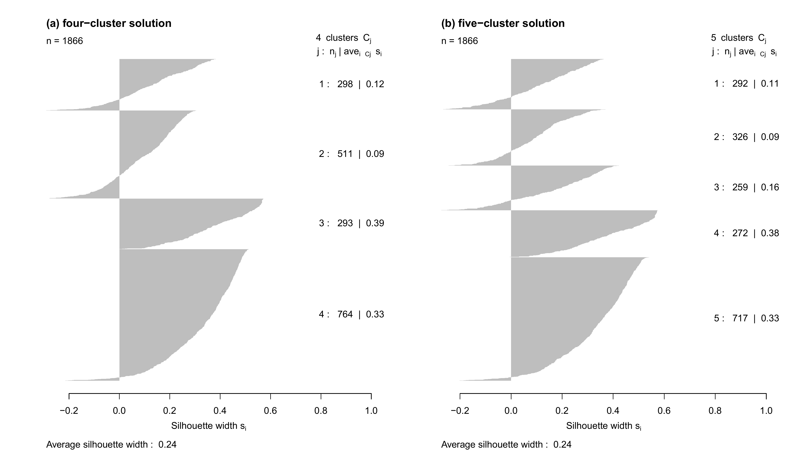
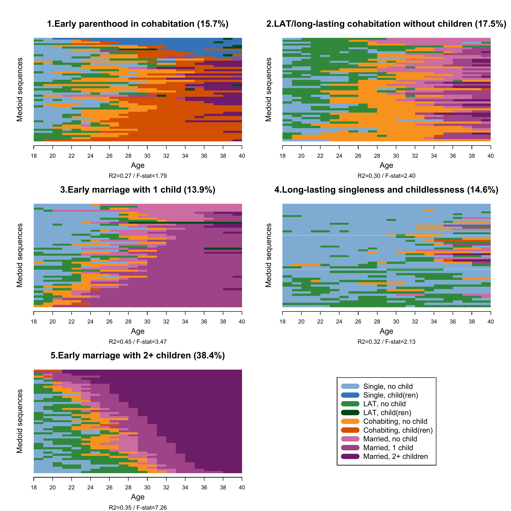
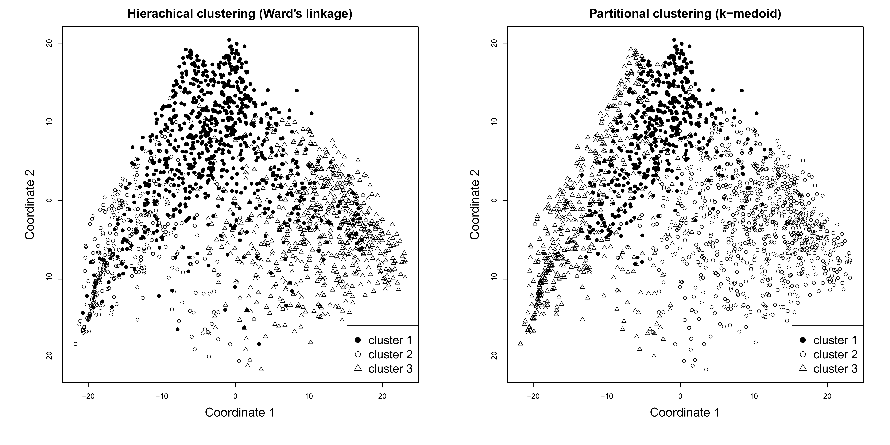

Chapter 4.2 Illustrative application
readme.html and run 4-0_ChapterSetup.R. This will create 4-0_ChapterSetup.RData in the sub folder data/R. This file contains the data required to produce the plots shown below.legend_large_box to your environment in order to render the tweaked version of the legend described below. You find this file in the source folder of the unzipped Chapter 4 archive.LoadInstallPackages.R# assuming you are working within .Rproj environment
library(here)
# install (if necessary) and load other required packages
source(here("source", "load_libraries.R"))
# load environment generated in "4-0_ChapterSetup.R"
load(here("data", "R", "4-0_ChapterSetup.RData"))
In chapter 4.2, we apply hierarchical and partitional clustering to family formation sequences. The data come from a sub-sample of the German Family Panel - pairfam. For further information on the study and on how to access the full scientific use file see here.
We apply a hierarchical cluster analysis by using the command ?hclust to the dissimilarity matrix partner.child.year.om for the family formation sequences, computed based on OM with indel=1 and substitution=2. With use non-squared dissimilarities (see the method option) and weights (see the members option, where we have to specify to which data.frame the vector with the weights belongs to).
fam.ward1 <- hclust(as.dist(partner.child.year.om),
method = "ward.D",
members = family$weight40)One can combine different heuristics to select the number of clusters. One is the so-called “elbow” method, based on a line graph which can be obtained by using the ?fviz_nbclust command. Notice that we specify here the method option (the method to be used for estimating the optimal number of clusters) as “wss”, that is the total within sum of square. The input of the command is the dissimilarity matrix partner.child.year.om:
fviz_nbclust(partner.child.year.om,
FUN = hcut,
method = "wss",
barfill = "black",
barcolor = "black",
linecolor = "black")
dev.off()
As an alternative or to be used in combination with the elbow method (please refer Chapter 4.2 in the book), we can use the ?as.clustrange command by using the ?hclust results (here stored in the object fam.ward1) as input. ?as.clustrange will return a series of cluster quality indicators. Notice that we have to specify the diss option by using the dissimilarity matrix of interest and the number of clusters we want the command to “test” (here 10 in the ncluster option)
fam.ward.test <- as.clustrange(fam.ward1,
diss = partner.child.year.om,
weights =family$weight40,
ncluster = 10)Let’s look at the cluster quality indicators:
fam.ward.test PBC HG HGSD ASW ASWw CH R2 CHsq R2sq HC
cluster2 0.25 0.30 0.29 0.18 0.18 323.97 0.12 565.24 0.19 0.34
cluster3 0.42 0.51 0.50 0.21 0.21 293.92 0.20 558.60 0.32 0.25
cluster4 0.53 0.69 0.68 0.23 0.23 250.58 0.24 515.74 0.40 0.17
cluster5 0.56 0.74 0.72 0.23 0.23 218.61 0.27 464.61 0.44 0.15
cluster6 0.49 0.69 0.68 0.16 0.17 193.78 0.29 407.00 0.47 0.18
cluster7 0.51 0.72 0.71 0.18 0.18 178.04 0.31 390.32 0.50 0.17
cluster8 0.53 0.77 0.75 0.18 0.18 169.58 0.34 385.53 0.54 0.15
cluster9 0.52 0.81 0.79 0.16 0.17 167.33 0.36 390.71 0.57 0.14
cluster10 0.52 0.83 0.81 0.16 0.17 159.92 0.38 383.55 0.60 0.13We can also visualize the trends in the indicators. Here some selected cluster quality indicators, visualized as z-scores:
plot(fam.ward.test, stat = c("ASW", "HG", "PBC", "CH", "R2"),
lty = 1,
norm = "zscore",
main = "CQIs, adjusted by mean and standard deviation (z-scores)",
lwd = 5,
ylab="z-scores")
dev.off()
Based on considerations presented in the book, we extract the 5-cluster solution. This can be done with the ?cutree command, specifying the ?hclust-generate object and the k number of clusters to be extracted. We store this information into an object called fam.ward.5cl …
fam.ward.5cl <-cutree(fam.ward1, k = 5)…that we add to the main dataframe family:
family$fam.ward.5cl<-fam.ward.5clBecause we want to illustrate how to compare different cluster solutions, we also extract 4 clusters and repeat the procedure:
fam.ward.4cl <-cutree(fam.ward1, k = 4)
family$fam.ward.4cl<-fam.ward.4clWe can now cross-tabulate the 4- and 5-cluster solutions storing the table into an object…
comp.ward<-table(fam.ward.5cl, fam.ward.4cl)… that we can print at our convenience:
comp.ward fam.ward.4cl
fam.ward.5cl 1 2 3 4
1 289 0 0 0
2 0 353 0 0
3 0 147 0 0
4 0 0 386 0
5 0 0 0 691We use the ?wcKMedRange command to obtain the cluster quality indicators for a number of clusters between 2 and 10 (see the kvals option) using the PAM algorithm. We also specify weights (see weights option). Further, we specify the initialclust option by using the ?hclust-generated object we used above.
fam.pam.ward <- wcKMedRange(partner.child.year.om,
weights = family$weight40,
kvals = 2:10,
initialclust = fam.ward1)Let’s consider the cluster quality criteria for this PAM clustering:
fam.pam.ward PBC HG HGSD ASW ASWw CH R2 CHsq R2sq HC
cluster2 0.43 0.52 0.50 0.22 0.23 348.56 0.13 676.34 0.22 0.24
cluster3 0.49 0.61 0.60 0.24 0.24 318.83 0.21 642.69 0.35 0.20
cluster4 0.56 0.72 0.71 0.25 0.25 272.71 0.26 577.80 0.43 0.15
cluster5 0.57 0.77 0.76 0.25 0.25 237.22 0.29 521.18 0.47 0.13
cluster6 0.48 0.71 0.69 0.19 0.19 212.05 0.31 462.26 0.50 0.18
cluster7 0.49 0.75 0.73 0.20 0.20 200.27 0.34 450.94 0.54 0.16
cluster8 0.50 0.78 0.77 0.21 0.21 194.91 0.37 456.15 0.58 0.15
cluster9 0.50 0.81 0.79 0.20 0.20 187.59 0.39 448.61 0.61 0.14
cluster10 0.52 0.87 0.85 0.23 0.24 184.81 0.42 471.62 0.64 0.11We first extract a 4-cluster solution:
fam.pam.ward.4cl<-fam.pam.ward$clustering$cluster4… attach the vector with the 4-cluster solution to the main dataframe:
family$fam.pam.ward.4cl<-fam.pam.ward.4cl… and re-label clusters from 1 to 4 instead of medoid identifier by using the ?recode command:
family$fam.pam.ward.4cl<-car::recode(family$fam.pam.ward.4cl,
"1532=1; 1664=2; 1643=3; 985=4")We then extract the 5-cluster solution with the same procedure:
fam.pam.ward.5cl<-fam.pam.ward$clustering$cluster5
family$fam.pam.ward.5cl<-fam.pam.ward.5cl
family$fam.pam.ward.5cl<-car::recode(family$fam.pam.ward.5cl,
"982=1; 790=2; 373=3; 1643=4; 985=5")We want to compare the 4 and 5-cluster solutions for PAM+Ward clustering. We can use the ?table command and store the table into an object…
comp.pam.ward<-table(family$fam.pam.ward.5cl, family$fam.pam.ward.4cl)…to be printed at our convenience:
comp.pam.ward
1 2 3 4
1 235 12 2 43
2 54 240 11 21
3 7 232 14 6
4 2 4 266 0
5 0 23 0 694It is time to compute the average silhouette width by cluster: we can use the ?silhouette command and specify the dissimilarity matrix in the dmatrix option. We do that for the 4- and the 5-cluster solutions. As usual, we store the results into an object…
silh.pam.ward.5cl <- silhouette(family$fam.pam.ward.5cl,
dmatrix = partner.child.year.om)
silh.pam.ward.4cl <- silhouette(family$fam.pam.ward.4cl,
dmatrix = partner.child.year.om)…that can be plotted:
par(mfrow=c(1,2))
plot(silh.pam.ward.4cl, main = "(a) four-cluster solution",
col="grey", border=NA)
plot(silh.pam.ward.5cl, main = "(b) five-cluster solution",
col="grey", border=NA)
dev.off()
We now proceed with the 5-cluster solution and generate substantively meaningful label for the clusters. Notice that to do this, we need to first visualize the clusters and ideally explore each of them with the descriptive tools presented in Chapter 2.
fam.pam.ward.lab.5cl <- c("Early parenthood in cohabitation",
"LAT and long-lasting cohabitation without children",
"Early marriage with 1 child",
"Long-lasting singleness and childlessness",
"Early marriage with 2+ children")We attach the labels to the clusters by generating a factor variable: beware of the order of the clusters (option levels) and of the labels (option labels which is specified with the object created above), as it has to correspond!
fam.pam.ward.factor.5cl <- factor(family$fam.pam.ward.5cl,
levels = c(1,2,3,4,5),
labels=fam.pam.ward.lab.5cl)We can now attach the cluster-vector (with labels) to the main data frame:
family$fam.pam.ward.factor.5cl<-fam.pam.ward.factor.5clTo be sure, one might want to confirm that family with the newly attached vectors is a whole data frame:
family<-data.frame(family)Among the many options for visualization introduced in Chapter 2, we use the relative frequency plot. The standard ?seqplot.rf command for this graph produces a combined figure: the sequences and the distance-to-medoid plot. One can also plot only one of the two by specifying the option which.plot. In the archive Chapter04.zip in the download area of this webpage, you can find a code to efficiently plot only the sequences part of the relative frequency plot especially if you want to plot the clusters in the same figure. Assuming you are working within .Rproj environment, you can use the following code:
source(here("source", "rfplotsleft.R"))Notice that we recommend do always display the distance-to-medoid plot for each cluster at least in the appendix of your article: an example of this can be found in Struffolino and Van Winkle 2021 (open-access version here).
For a nice display of the clusters using the sourced code “rfplotsleft.R”, we first generate separate objects containing the sequences allocated to each clusters:
cl1_5cl<-(partner.child.year.seq[family$fam.pam.ward.factor.5cl=="Early parenthood in cohabitation",1:22])
cl2_5cl<-(partner.child.year.seq[family$fam.pam.ward.factor.5cl=="LAT and long-lasting cohabitation without children",1:22])
cl3_5cl<-(partner.child.year.seq[family$fam.pam.ward.factor.5cl=="Early marriage with 1 child",1:22])
cl4_5cl<-(partner.child.year.seq[family$fam.pam.ward.factor.5cl=="Long-lasting singleness and childlessness",1:22])
cl5_5cl<-(partner.child.year.seq[family$fam.pam.ward.factor.5cl=="Early marriage with 2+ children",1:22])We then compute the dissimilarity matrix for each separate cluster:
cl1_5cl.om<- seqdist(cl1_5cl, method="OM", indel=1, sm= "CONSTANT")
cl2_5cl.om<- seqdist(cl2_5cl, method="OM", indel=1, sm= "CONSTANT")
cl3_5cl.om<- seqdist(cl3_5cl, method="OM", indel=1, sm= "CONSTANT")
cl4_5cl.om<- seqdist(cl4_5cl, method="OM", indel=1, sm= "CONSTANT")
cl5_5cl.om<- seqdist(cl5_5cl, method="OM", indel=1, sm= "CONSTANT")In preparation for the graph, we generate labels for x-axis, 22 time-points in steps of 2, labeled with numbers from 18 to 40, that is the age span our sequences cover.
count <- seq(from = 0, to = 22, by = 2)
years <- seq(from = 18, to = 40, by = 2)We now code the combined relative frequency plot (only the sequences part) to display all clusters at once: for each cluster, we set 50 medoid sequences. Notice that here we use the seqplot.rf.l command that is included in the sourced code “rfplotsleft.R”. Note that the line below the x-axis label “Age” of each cluster plot reports the R2 and F-stat values generated by running the standard ?seqplot.rf command. It is your choice to report them, but we recommend to do so. Unfortunately, for now our solution is to impute this information manually as you can see in the code below:
def.par <- par(no.readonly = TRUE)
par(oma = c(0, 2, 2, 0))
m <- matrix(c(1,2,3,4,5,6), 3, 2, byrow = TRUE)
nf <- layout(mat = m, heights = c(0.8,0.8,0.8))
layout.show(nf)
par(mar = c(5, 3, 3, 3))
seqplot.rf.l(cl1_5cl, diss=cl1_5cl.om,
k=50, xlab="",cex.main=1.6,
title="1.Early parenthood in cohabitation (15.7%)",
ylab=FALSE,
cex.lab=1.4, axes=FALSE)
mtext("Age",side = 1, line = 2.5, cex=0.9)
mtext("Medoid sequences",side = 2, line = 1.5, cex=0.9)
mtext("R2=0.27 / F-stat=1.79",side = 1, line = 4, cex=0.7)
axis(1, at = count, labels = years, font = 1, cex.axis = 1, lwd = 1)
seqplot.rf.l(cl2_5cl, diss=cl2_5cl.om,
k=50, xlab="",cex.main=1.6,
title="2.LAT/long-lasting cohabitation without children (17.5%)",
ylab=FALSE,
cex.lab=1.4, axes=FALSE)
mtext("Age",side = 1, line = 2.5, cex=0.9)
mtext("Medoid sequences",side = 2, line = 1.5, cex=0.9)
mtext("R2=0.30 / F-stat=2.40",side = 1, line = 4, cex=0.7)
axis(1, at = count, labels = years, font = 1, cex.axis = 1, lwd = 1)
seqplot.rf.l(cl3_5cl, diss=cl3_5cl.om,
k=50, xlab="",cex.main=1.6,
title="3.Early marriage with 1 child (13.9%)",
ylab=FALSE,
cex.lab=1.4, axes=FALSE)
mtext("Age",side = 1, line = 2.5, cex=0.9)
mtext("Medoid sequences",side = 2, line = 1.5, cex=0.9)
mtext("R2=0.45 / F-stat=3.47",side = 1, line = 4, cex=0.7)
axis(1, at = count, labels = years, font = 1, cex.axis = 1, lwd = 1)
seqplot.rf.l(cl4_5cl, diss=cl4_5cl.om,
k=50, xlab="",cex.main=1.6,
title="4.Long-lasting singleness and childlessness (14.6%)",
ylab=FALSE,
cex.lab=1.4, axes=FALSE)
mtext("Age",side = 1, line = 2.5, cex=0.9)
mtext("Medoid sequences",side = 2, line = 1.5, cex=0.9)
mtext("R2=0.32 / F-stat=2.13",side = 1, line = 4, cex=0.7)
axis(1, at = count, labels = years, font = 1, cex.axis = 1, lwd = 1)
seqplot.rf.l(cl5_5cl, diss=cl5_5cl.om,
k=50, xlab="",cex.main=1.6,
title="5.Early marriage with 2+ children (38.4%)",
ylab=FALSE,
cex.lab=1.4, axes=FALSE)
mtext("Age",side = 1, line = 2.5, cex=0.9)
mtext("Medoid sequences",side = 2, line = 1.5, cex=0.9)
mtext("R2=0.35 / F-stat=7.26",side = 1, line = 4, cex=0.7)
axis(1, at = count, labels = years, font = 1, cex.axis = 1, lwd = 1)
plot(1, type = "n", axes=FALSE, xlab="", ylab="")
legend(x = "center",inset = 0,
legend = longlab.partner.child,
col=colspace.partner.child,
lwd=10, cex=1.3, ncol=1)
dev.off()
We use the ?cmdscale to calculate the multidimensional scaling of the dissimilarity matrix partner.child.year.om. We the k option (the maximum dimension of the space which the data are to be represented in) at 2:
mds.year.om<-cmdscale(partner.child.year.om, k = 2)For illustrative purposes, we extract 3 clusters based on the hierarchical clustering (Ward) and the PAM clustering following the procedure presented in detail above.
# Ward
mds_ward <- hclust(as.dist(partner.child.year.om),
method = "ward.D",
members = family$weight40)
# Cut the clustering at 3
mds_ward_3 <-cutree(mds_ward, k = 3)
#PAM
mds_pam <- wcKMedoids(partner.child.year.om, k = 3)
# Extract the 3 clusters
mds_pam <- mds_pam$clustering
# Re-label the clusters 1 to 3 instead of medois id
mds_pam <- car::recode(mds_pam, "156=1; 985=2; 1735=3")We can now use the objects mds.year.om, mds_ward, mds_pam to visualize the distrubution of the sequences in the samples by cluster (extracted by using two different clustering method) in a bi-dimensional space.
par(mfrow=c(1,2))
par(mar = c(7, 7, 3, 3))
plot(mds.year.om, type = "n",
main="Hierachical clustering (Ward's linkage)",
ylab="Coordinate 2",
xlab="Coordinate 1",
cex.lab=1.7,
cex.main=1.7)
points(mds.year.om[mds_ward_3 == 1, ], pch = 19, col = "black")
points(mds.year.om[mds_ward_3 == 2, ], pch = 21, col = "black")
points(mds.year.om[mds_ward_3 == 3, ], pch = 24, col = "black")
legend("bottomright", pch = c(19,21,24), legend = c("cluster 1", "cluster 2", "cluster 3"), cex=1.6)
plot(silh.pam.ward.5cl, main = "(b) MDS PAM", col="grey", border=NA)
par(mar = c(7, 7, 3, 3))
plot(mds.year.om, type = "n",
main="Partitional clustering (k-medoid)",
ylab="Coordinate 2",
xlab="Coordinate 1",
cex.lab=1.7,
cex.main=1.7)
points(mds.year.om[mds_pam == 1, ], pch = 19, col = "black")
points(mds.year.om[mds_pam == 2, ], pch = 21, col = "black")
points(mds.year.om[mds_pam == 3, ], pch = 24, col = "black")
legend("bottomright", pch = c(19,21,24), legend = c("cluster 1", "cluster 2", "cluster 3"), cex=1.6)
dev.off()
We adopt the same strategy used above for yearly sequences to the case of monthly sequences.
Hierarchical cluster analysis, non-squared dissimilarities, weighted:
fam.ward1.month <- hclust(as.dist(partner.child.month.om),
method = "ward.D",
members = family$weight40)PAM cluster analysis initialized with Ward, weighted:
fam.pam.ward.month <- wcKMedRange(partner.child.month.om,
weights = family$weight40,
kvals = 2:10,
initialclust = fam.ward1.month)Print the quality test for different cluster solutions
fam.pam.ward.month PBC HG HGSD ASW ASWw CH R2 CHsq R2sq HC
cluster2 0.41 0.47 0.47 0.22 0.22 336.85 0.13 645.83 0.22 0.25
cluster3 0.51 0.61 0.60 0.23 0.24 304.42 0.21 613.04 0.34 0.19
cluster4 0.49 0.62 0.62 0.21 0.21 265.61 0.25 548.78 0.41 0.20
cluster5 0.51 0.68 0.68 0.21 0.21 234.84 0.29 495.70 0.46 0.17
cluster6 0.51 0.72 0.72 0.21 0.21 219.85 0.32 487.01 0.51 0.16
cluster7 0.52 0.76 0.76 0.22 0.22 208.00 0.35 473.79 0.55 0.14
cluster8 0.50 0.76 0.76 0.20 0.20 195.64 0.37 450.95 0.57 0.15
cluster9 0.51 0.80 0.80 0.22 0.23 190.03 0.39 458.18 0.61 0.13
cluster10 0.53 0.85 0.85 0.24 0.24 185.71 0.42 474.29 0.65 0.10Extract the 5-cluster solution:
fam.pam.ward.month.5cl<-fam.pam.ward.month$clustering$cluster5Attach the vector with the 5-cluster solution to the main data frame:
family$fam.pam.ward.month.5cl<-fam.pam.ward.month.5clRe-label clusters from 1 to 5 instead of medoid identifiers:
family$fam.pam.ward.month.5cl<-car::recode(family$fam.pam.ward.month.5cl,
"1652=1; 1032=2; 412=3; 869=4; 927=5")We can now compare the cluster assignment in the case of yearly and monthly data. In both cases we extracted 5 clusters from the PAM+Ward option:
comp.y.m<-table(family$fam.pam.ward.5cl, family$fam.pam.ward.month.5cl)Print the resulting table:
comp.y.m
1 2 3 4 5
1 222 38 7 3 22
2 91 108 115 11 1
3 0 35 212 11 1
4 5 29 2 236 0
5 2 217 5 0 493If you see mistakes or want to suggest changes, please create an issue on the source repository.
Text and figures are licensed under Creative Commons Attribution CC BY-NC 4.0. Source code is available at https://github.com/sa-book/sa-book.github.io, unless otherwise noted. The figures that have been reused from other sources don't fall under this license and can be recognized by a note in their caption: "Figure from ...".